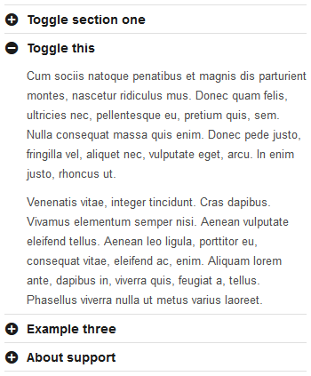

Version: 1.2
Created: 2 May 2013
Website: http://themeforest.net/item/time-responsive-website-template/4279726/
Demo: http://themes.kubasto.com/template/time/
Time is a responsive template, which means it adapts to the device on which it's presented. The template cares for your content so it looks great on all versions, but you can also decide to show part of a content on some versions only, and hide on others (read more about it here).
Time has a lot of features, and most of them can be explored by looking at it's code, but if you need a deeper insight, this is the detailed documentation prepared for you.
Thanks for buying, and enjoy :)
| Folder/file name | Description |
|---|---|
CACHE |
Folder for cache files. |
CONTENT |
Folder containing example content. |
DATA |
Folder containing all additional resources used in the template. |
DATA/CSS |
Folder containing CSS files. |
DATA/CSS/bright.css |
Style sheet with the bright version. |
DATA/CSS/bright.min.css |
Minified version of the bright.css file. |
DATA/CSS/dark.css |
Style sheet with the dark version. |
DATA/CSS/dark.min.css |
Minified version of the dark.css file. |
DATA/CSS/color-*.css |
Style sheets with leading colors. |
DATA/CSS/fancybox.min.css |
Minified version of the FancyBox style sheet. |
DATA/CSS/layerslider.min.css |
Minified version of the LayerSlider style sheet. |
DATA/CSS/mejs.min.css |
Minified version of the MediaElement.js style sheet. |
DATA/CSS/mobile.css |
Mobile version style sheet. |
DATA/CSS/mobile.min.css |
Minified version of the mobile.css file. |
DATA/CSS/style.css |
Main style sheet. |
DATA/CSS/style.min.css |
Minified version of the style.css file. |
DATA/IMG |
Folder containing all graphic elements. |
DATA/JS |
Folder containing JavaScript. |
DATA/JS/*.min.js |
Minified version of JS used in plugins and extensions applied in the template. |
DATA/JS/time.js |
Main JavaScript. |
DATA/JS/time.min.js |
Minified version of the time.js file. |
DATA/MEJS |
Folder with files of the MediaElement.js audio/video player. |
DATA/PHP |
Folder containing php files. |
*.html |
All files with the template pages. |
Time is responsive, and there are two thresholds - maximum size and mobile size. By default these values are:
980 px - above that value, site won't increase width even it there is more area in a browser's window.
768 px - below that value, site will present styles prepared for mobile version.
Structure of the site by sections, id's and classes:
Basic configuration of the Time template is selecting color scheme, specifying leading color and a few options kept in JavaScript, which defines how the template works.
To use bright or dark version you need to call the appropriate css style sheet (in the <head> section). There are two files to choose from: data/css/bright.css and data/css/dark.css. For example:
<link rel="stylesheet" href="data/css/bright.css" />
data/css/color-red.css defines leading color. If you want to modify it, replace all instances of #ef0000 to another color of your choice.
If you want to change JS configuration, you need to declare timeConfig variable and place it - depending on your preference - in the <head> section of the website or in a separate file.
Available parameters:
| Parameter | Default value | Description |
|---|---|---|
templatePath |
|
Sets the link to the template folder. In most cases the default value should work. |
tableMobileColsThreshold |
|
Sets the threshold for the number of columns in a table from which on the mobile version there is a horizontal view. |
columnsMobileColsThreshold |
|
Sets the threshold for the number of columns (.columns element) from which on the mobile version there are twice less columns in a row than on a desktop version. |
fancyboxOptions |
|
Options for the FancyBox plugin. More information can be found on the plugin website. |
flexsliderOptions |
|
Options for the FlexSlider plugin. More information can be found on the plugin website. |
layersliderOptions |
|
Options for the LayerSlider plugin. More information can be found in the plugin documentation. |
masonryOptions |
|
Options for the Masonry plugin. More information can be found on plugin website. |
captions |
|
Labels used in the JS code in order to ease translation to other languages without having to modify the source code. |
All above parameters are optional, and take default value if needed. For example:
var timeConfig = {
tableMobileColsThreshold: 5,
flexsliderOptions: {animation: 'fade', slideshow: false, animationSpeed: 400},
layersliderOptions: {skin: 'time-bright', autoStart: true, autoPlayVideos: false, navPrevNext: false, navStartStop: true, navButtons: true, thumbnailNavigation: false}
};
Time supports two layout types: boxed and open. To choose one of them set the class of the body element to either layout-boxed or layout-open. E.g.:
<body class="layout-boxed">
Maximum site width can be defined by adding the following CSS code to either the <head> section or to a separate file:
<style>
.layout-boxed .outer-container, .container {
max-width: 980px;
}
</style>
If you don't want your website to be responsive, remove the following css calling in the <head> section:
<link rel="stylesheet" href="data/css/mobile.css" media="only screen and (max-width: 767px)" />
Due to Retina support and many other features, changing the background is slightly different than in a simple html site.
To add a page background, place a <div> element with the background style inside the #backgrounds layer. Eg:
<div id="backgrounds">
<div style="background-image: url(content/bg/alps.jpg);" data-bg-2x="content/bg/alps@2x.jpg"></div>
</div>
The additional data-bg-2x attribute defines the Retina background.
If you want the background to be striped, add stripes class to the background layer:
<div class="stripes" style="background-image: url(content/bg/alps.jpg);" data-bg-2x="content/bg/alps@2x.jpg"></div>
If the Layer slider has slides with their own background, they will cover the main background. If not, the main background will be visible.
To place your logo change the link in the following piece of code. Remember to change the image width and height and add the Retina version.
<!-- Logo -->
<h1 class="logo vertical-align" title="Time Template">
<a href="index.php"><img src="content/logo.png" data-2x="content/logo@2x.png" width="180" height="36" alt="Time Template" /></a>
</h1>
<!-- // Logo -->
To use a text logo, replace the <img> tag with the logo text, eg:
<h1 class="logo vertical-align" title="Time Template">
<a href="index.php">Time Template</a>
</h1>
To create a menu, create an unordered HTML list. Nesting lists will create multi-leveled menu. Place the list in one of menu areas. Remember that the secondary menu doesn't support multi-leveled items, so all sub-menus will be displayed at the same level.
Example menu code:
<ul>
<li><a href="...">Customization</a></li>
<li>
<a href="...">My other templates</a>
<ul>
<li><a href="...">Fast Blog</a></li>
<li><a href="...">Stuff</a></li>
<li><a href="...">Simple Mobile</a></li>
</ul>
</li>
<li><a href="...">My profile</a></li>
<li><a href="...">Support</a></li>
<li><a href="...">Contact</a></li>
</ul>
If you want to add the search field to your menu (only primary and mobile menu), use the following code as the next menu element:
<li>
<form class="search" action="search.php">
<input type="text" placeholder="search" /><button type="submit"><i class="icon-search"></i></button>
</form>
</li>
If you want to add/modify the main slider, use the following code in the desired place:
<div class="under-container">
<div class="container">
<!-- Layer slider -->
<div id="layer-slider" style="width: 980px; height: 300px;">
...
</div>
<!-- // Layer slider -->
</div>
</div><!-- // .under-container -->
The slider needs to have the size defined. Its width has to be the same as the page width (default is 980px).
For information on how to create slides, please refer to the Layer Slider documentation.
To configure contact form, edit the data/php/mail.php file. Use $config variable to define email address for incoming contact forms.
Because it's a responsive template (written in HTML5) and also Retina-ready, adding images differs a little from the usual way.
You need to use <figure>, <img> and <figcaption> tags to add an image. For example:
<figure class="alignleft">
<a href="photo.jpg" title="Place for credits" class="fb">
<img src="photo-thumb.jpg" data-2x="photo-thumb@2x.jpg" width="320" height="240" alt="" />
</a>
<figcaption>Place for credits</figcaption>
</figure>
The img tag has a second attribute: data-2x which defines the link to the image displayed on retina screens. This attribute is optional.
Classes alignleft and alignright decide if the image is floated from left or right side. aligncenter centers the image on the page - in this case the <figure> tag needs to have a defined width (same as the image width).
Caption is optional. To remove it, delete the <figcaption> tag.
To add a font icon (from the attached set), use the <i> tag with a chosen class, eg:
<i class="icon-picture"></i>
Also, you can define the colour or the size of the icon within style, eg:
<i class="icon-picture" style="color: #0ba6ff; font-size: 1.2em;"></i>
Image icons are regular images. You can find all available raster icons in the data/img/icons folder. An example code:
<img src="data/img/icons/koloria/add-symbol.png" data-2x="data/img/icons/koloria/add-symbol@2x.png" width="16" height="16" alt="" />
Add the fancy class to the <ul> element and add icons to the list elements. For example:
<ul class="fancy">
<li><i class="icon-check" style="color: #62af2c;"></i> Newspaper</li>
<li><i class="icon-check" style="color: #62af2c;"></i> Book</li>
<li><i class="icon-cancel" style="color: #fe0000;"></i> Camera</li>
...
</ul>
To add a simple button, use the button class within a hyperlink or use the <button> tag instead:
<a href="..." class="button">Standard button</a>
Change its size by adding big or huge class:
<a href="..." class="button big">
<span>Big button</span><i class="icon-upload-cloud" style="color: #0e87ee;"></i>
</a>
If you're using the <button> tag, to make it a link add the data-href attribute (as for regular links). You can also use the data-target attribute to define the link target (eg. _blank for a new window). For example:
<button data-href="http://www.themeforest.net" data-target="_blank">Click me!</button>
To place a text in a color box, add the message class to a paragraph and one of the color classes: blue, green, orange, red. If you don't add any class the color will be the default color.
<p class="message green">green message</p>
<p class="message red" data-message-closable="true">
<i class="icon-cancel-circled"></i>red message
</p>
Optional attributes:
data-message-closable - defines if the message can be closed (X in the top-right corner).
To add a tooltip for a specific text, add the following code before and after the text:
<span class="tooltip" data-gravity="n" title="I'm a tooltip">Move your mouse here</span>
Required attributes:
title - text, which displays inside the tooltip.
Optional attributes:
data-gravity - direction the tooltip points. Available values are: nw, n, ne, w, e, sw, s, se,
data-fade - fade effect on mouse-in. Available options: true, false.
To divide content into columns, us the example code:
<div class="columns">
<ul>
<li class="col-1-2">
...
</li>
<li class="col-1-2">
...
</li>
</ul>
</div>
There are 2 equal columns in this example (50% - 50%). The class, which defines width of the column is in this case: col-1-2. You can add any number of columns, with any width using col-X-Y classes, where X is a numerator, and Y denominator of a fraction, which defines width of a column. Remember that all columns of the block must always be an integral number (eg. 1, 2, 3). If the sum of all columns is greater than 1, then the extra columns will be wrapped to the next line.
Examples:
25% | 25% | 50%:
<div class="columns">
<ul>
<li class="col-1-4">...</li>
<li class="col-1-4">...</li>
<li class="col-2-4">...</li>
</ul>
</div>
You can replace col-2-4 class of the last column with the col-1-2 class, because it means the same. Choose which is more convenient for you.
75% | 25%:
<div class="columns">
<ul>
<li class="col-3-4">...</li>
<li class="col-1-4">...</li>
</ul>
</div>
25% | 25% | 25% | 25:
<div class="columns">
<ul>
<li class="col-1-4">...</li>
<li class="col-1-4">...</li>
<li class="col-1-4">...</li>
<li class="col-1-4">...</li>
</ul>
</div>
You can find more examples it the typography.html or other files.
On the mobile version, all columns are presented one below the other (always full-width). If the number of columns is greater or equal to the value of the columnsMobileColsThreshold parameter, then the number of columns on the mobile version will be reduced by half and only on a very narrow display will it be reduced to one column. This works only for a column set of type 1/X (eg. 6x 1/3, 2x 1/2).
Price tables are enhanced columns. To place a price table, use a code of columns and add the .price-table class to the div of a column. For example:
<div class="columns price-table">
<ul>
<li class="col-1-5">...</li>
...
</ul>
</div>
Inside a column you can place the following elements: h1, h2, h3, p, figure and div. If you want to place a list (or another not mentioned above element), place it inside a div element. You can find more examples in the price-tables.html file.
Use the following code to create tabs:
<div class="tabs">
<div title="Tab one">
<p>Aenean commodo ligula eget dolor....</p>
</div>
<div title="Tab two">
...
</div>
<div title="Tab three">
...
</div>
</div>
Required attribute:
title - tab title.
First tab is active by default. You can change it by adding active class to a different <div> element.
Use the following code to create tabs:
<div class="super-tabs" data-super-tabs-ordered="true">
<div title="I'm SuperTab nr one" data-super-tabs-description="And some short description below">
<a href="color-schemes.php"><img src="content/misc/tab-1.png" data-2x="content/misc/tab-1@2x.png" width="635" height="270" alt="" /></a>
</div>
<div title="Featured content tabs" data-super-tabs-description="are perfect for presenting key content to your clients">
...
</div>
<div title="Important feature" data-super-tabs-description="You can remove the description if you want">
...
</div>
</div>
Unlike regular tabs, Super Tabs are for images only (optionally with hiperlink).
Required attribute:
title - tab title.
Optional attribute:
data-super-tabs-ordered - It's for numbering (or not) tabs. Available options: true, false,
data-super-tabs-description - Additional description under tab's title.
First tab is active by default. You can change it by adding active class to a different <div> element.

Use the following code to create toggles:
<div class="toggles">
<div title="Toggle section one">
...
</div>
<div class="active" title="Toggle this">
<p>Cum sociis natoque penatibus...</p>
</div>
<div title="Example three">
...
</div>
<div title="About support">
...
</div>
</div>
Required attributes:
title - toggle title.
Optional attributes:
data-toggles-singular - defines whether at one time there can only be one toggle open. Available options: true, false.
First toggle is active by default. You can change it by adding active class to a different <div> element.
There are two types of social media buttons available: vertical and horizontal.
<div class="social-buttons">
<ul>
<li><div class="fb-like" data-href="..." data-send="false" data-layout="box_count" data-show-faces="false"></div></li>
<li><a class="twitter-share-button" href="https://twitter.com/share" data-url="..." data-text="..." data-count="vertical">Tweet</a></li>
<li><div class="g-plusone" data-href="..." data-size="tall"></div></li>
<li><script class="inshare" type="IN/Share" data-url="..." data-counter="top"></script></li>
<li><a data-pin-config="above" href="http://pinterest.com/pin/create/button/?url=...&media=...&description=..." data-pin-do="buttonPin"><img src="http://assets.pinterest.com/images/pidgets/pin_it_button.png" /></a></li>
</ul>
</div>
Fill in the attributes:
data-url, data-href - URL of a page which the button refers to,
data-text - suggested tweet message.
Pinterest button requires defining parameters in the href attribute. Remember to code the data properly for links (E.g.using the urlencode PHP function).
The other variant are horizontal social media buttons.
<ul class="meta social">
<li><div class="fb-like" data-href="..." data-send="false" data-layout="button_count" data-show-faces="false"></div></li>
<li><a class="twitter-share-button" href="https://twitter.com/share" data-url="..." data-text="..." data-count="horizontal">Tweet</a></li>
<li><div class="g-plusone" data-href="..." data-size="medium" data-annotation="bubble"></div></li>
<li><script class="inshare" type="IN/Share" data-url="..." data-counter="right" data-showzero="true"></script></li>
<li><a data-pin-config="beside" href="http://pinterest.com/pin/create/button/?url=...&media=...&description=..." data-pin-do="buttonPin"><img src="http://assets.pinterest.com/images/pidgets/pin_it_button.png" /></a></li>
</ul>
If you want to embed a video using the embedding code supplied by the external service, enclose it with a following tag:
<div class="embed">...</div>
For example:
<div class="embed">
<iframe width="560" height="315" src="http://www.youtube.com/embed/HEEUJNYZps0?rel=0" frameborder="0" allowfullscreen></iframe>
</div>
If you want to place a self hosted video, use the following code:
<div class="embed">
<video src="http://download.blender.org/peach/trailer/trailer_1080p.ogg" poster="content/media/video-poster.jpg" controls="controls" preload="none"></video>
</div>
Optional attributes:
src - defines path to the video file,
poster - defines path to an image, which is displayed before playing the video.
The same applies to audio:
<div class="embed">
<audio src="content/media/audio.mp3" controls="controls" preload="none"></audio>
</div>
If you want to place a Twitter timeline on a page, use the following code:
<div class="twitter" data-twitter-username="KUBASTOcom"></div>
Fill in the attributes:
data-twitter-username - your username,
data-twitter-include-retweets - include or not retweets. Available options: true, false (default: true),
data-twitter-exclude-replies - include or not replies. Available options: true, false (default: false),
data-twitter-count - number of tweets (default: 3),
data-twitter-orientation - layout of tweets list. Available options: vertical, horizontal (columns), scrollable.
Remember to configure Twitter API settings in the data/php/twitter.php file. Because of Twitter API 1.1 new rules, you need to create a Twitter app for the Twitter widget to work correctly. You can read how to do that in Twitter FAQ.
If you want to place images from flickr.com service, use the following code:
<div class="flickr" data-flickr-id="52617155@N08" data-flickr-count="9"></div>
Fill in the attributes:
data-flickr-id - your Flickr ID. If you don’t know your Flickr ID, you can check it on the idgettr.com,
data-flickr-count - number of pictures to display.
Use one of the built-in CSS classes to manage elements displaying on different site versions (desktop or mobile):
mobile-only or desktop-only.
For example, if you want to display an image on a desktop version only:
<figure class="desktop-only">
<a href="content/misc/boy.jpg" class="inset-border fb zoom-hover" data-zoom-hover-icon="icon-search"><img src="content/misc/boy-220.jpg" data-2x="content/misc/boy-220@2x.jpg" width="368" height="240" alt="" /></a>
</figure>
There are not many graphic files used to built this template. If you would like to modify any of them, there is the psd folder with source files included.
If you decide to use the default site width (980 px), these are sizes of content areas dependent of number of sidebars and columns on both - desktop and mobile versions. It's handy if you want to prepare images, which will fit for all cases.
For example, if you want to know the best size for image to use on a page with no sidebars, and 3 columns - pick the highest number from the column 3, except the 748, because you want to use alternative column layout for mobile. So it's 364px. Image will never be bigger on any browser's size, so it's the biggest size you need.
| Version \ Columns | 1 | 2 | 3 | 4 | 5 | 6 |
|---|---|---|---|---|---|---|
| Desktop (full-width) | 940px | 460px | 300px | 220px | 172px | 140px |
| Desktop (1 sidebar) | 700px | 340px | 220px | 160px | 124px | 100px |
| Desktop (2 sidebars) | 460px | 220px | 140px | 100px | 76px | 60px |
| Mobile (alternative) | 748px | 748px | 364px | 364px | 236px | 236px |
| Mobile | 748px | 748px | 748px | 748px | 748px | 748px |
There are a few CSS classes to use anywhere in the template:
color-*, background-* - a handy set of classes with colors and background colors:
clear - prevents floating of the element with this class; equivalent to this code:
<div style="clear: both;">...</div>
clear-fix - makes that any floating element inside a block element with this class will not stick out of it. So:
<div id="some-block" class="clear-fix">
...
</div>
is the same as:
<div id="some-block">
...
<div style="clear: both;"></div>
</div>
alpha - any element with this class has a float: left; style, so it's floated from the right.
beta - any element with this class has a float: right; style, so it's floated from the left.
On mobile versions, these classes are ignored, and elements display typically (one below another).
For example:
<div class="alpha">Left column</div>
<div class="beta">Right column</div>
In the example above, on desktop versions, these elements will appear one next to another. On mobile, one below another.
alignleft, alignright, aligncenter - forces right or left floating. So:
<div class="alignleft">...</div>
is the same as:
<div style="float: left;">...</div>
On the mobile version these classes are no longer valid (similarly the alpha/beta classes), so for instance an image with this class is no longer floated. To prevent this add the fixed class on the mobile version, eg:
<div class="alignleft fixed">...</div>
full-width - element with 100% width.
full-width-mobile - as above, but it has effect only on the mobile version.
horizontal-align - centers the elements horizontally. As opposed to aligncenter, this class is supported by JavaScript and is applicable when there is a block element without a defined size.
vertical-align - suppprted by JavaScript, this class centers the element vertically (relative to the superior element).
table-vertical-align - centers the element vertically with the use of the following attributes: display: table and display: table-cell, eg:
<div class="table-vertical-align">
<div>
...
</div>
</div>
text-center - centers text.
no-js - is the <html> element class set automatically in the lack of JavaScript support.
js - as above, but when JS is supported.
ie, no-ie, ie9, lt-ie9 - are <html> element classes set automatically in case the browser is (in the following order): Internet Explorer, other than IE, IE9, lower than IE9. Exception: IE10 will be set as no-ie because in this version conditional tags are not supported.
jQuery
jQuery UI
jQuery Easing Plugin
MediaElement.js
Fancybox
FlexSlider
LayerSlider
masonry
tipsy
imagesLoaded
oauth
Selectivizr
Entypo Font
Brandico Font
Koloria Icons Pack by Andy Gongea
pc.de Essen Icon Pack
PC 100 Icon Pack
Travel icon pack
Flag Icons by GoSquared
Subtle Patterns
Time 1.2:
Time 1.1:
Time 1.0:
for purchasing this template. If you have any further questions don’t hesitate to ask. The best way to contact me is the contact form on my profile page.
Kuba Sto